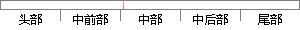

当Rcode为2时，表示递归服务器出现错误；
片段位置图

相似结果|
相似片段 1：，表示服务器支持递归查询。如果是报文格式错误的应答，rcode置为 1，如果是不支持类型的应答，rcode置为 4，如果是拒绝提供服务的应答，rcode置为 5。接下来构造问题部分，域名、类型和类都与查询
相似片段 2：，放在响应包中表示DNS服务器是否支持递归查询，l表示支持．后四个bit是RCODE域，指定了回应的种类：errorcondition就是正常的应答包，包含对查询的应答
相似片段 3：中总为0(RFC1035规定)。1 1协议可扩展属性测试方法的研究与实现Rcode：4位，O表示没有错误，1表示由于包格式错误，导致服务器无法对包进行解释；2表示服务器不能处理数据包，查询失败；3表示
相似片段 4：关系。DNS服务器需要不断地进行更新，更新过程中会出现一些错误，例如更新的名字没有包含在区域中。为了在 DNS头部中标识这些错误，RFC 2136扩展了 DNS包中的RCODE值，定义了值6~10种
|
※ 片段修改建议 ※
近似词参考：- 表示：暗示 默示 示意 透露表现 表现
- 出现：呈现 泛起 涌现
- 错误：毛病 过错 谬误
系统自动生成语句：当Rcode为2时，暗示递归服务器呈现毛病；
注：本片段修改建议为系统自动生成，仅供参考。